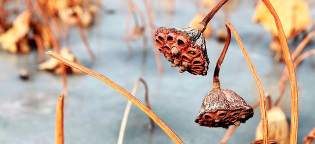
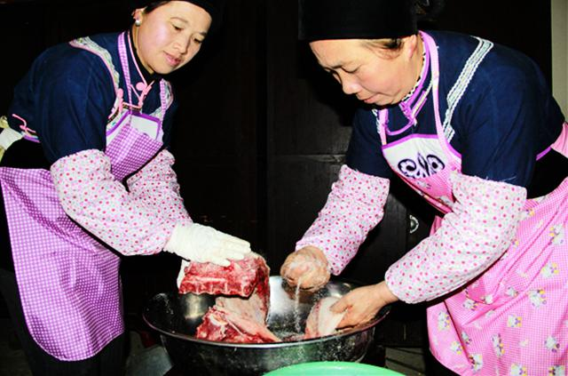
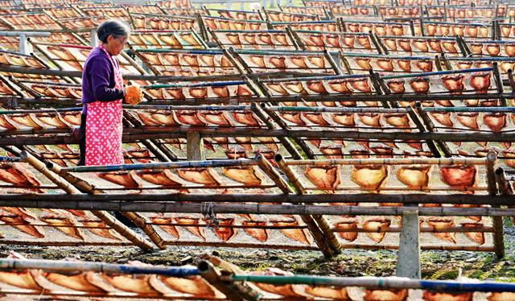

小雪，是二十四节气中的第20个节气。11月22日或23日，太阳到达黄经240°时为小雪节气。今年的小雪时间是2017年11月22日（农历丁酉年十月初五）。
《月令七十二候集解》记载：“十月中，雨下而为寒气所薄，故凝而为雪。小者未盛之辞。” 小雪物候为：“一候虹藏不见；二候天气上升地气下降；三候闭塞而成冬。” 天空中的阳气上升，地中的阴气下降，天地闭塞进入寒冬。
小雪节气，广大地区刮起西北风，白天变短，夜间气温逐渐降到0℃以下，大地尚未过于寒冷，开始降雪，雪量不大，故称小雪。此时寒潮和强冷空气活动较为频繁。黄河以北地区会出现初雪，人们需注意御寒保暖了。南方江淮地区开始呈现初冬景象，如北宋文学家苏轼所写：“荷尽已无擎雨盖，菊残犹有傲霜枝。一年好景君须记，正是橙黄橘绿时”。
俗话说“小雪地封严”，其后江河陆续封冻。小雪节气初，东北土壤冻结深度已达10厘米，到节气末冻结至一米多。农谚所说的“小雪雪满天，来年必丰年”，是说此时的雪水能抗旱防寒，小雪落雪，来年雨水均匀，无大旱涝。此时下雪，可抑制或消除一些病菌和害虫，此外，积雪还有隔温保暖作用，有利于土壤的有机物分解，增强土壤肥力，因此，“瑞雪兆丰年”是有一定科学道理的。
小雪时节，天气越来越冷，尽管人们有猫冬的习惯，但农事不可懈怠。北方地区的果农开始为果树修枝，包扎株杆，以防果树受冻。冬天蔬菜多采用深沟贮存，或用地窖。俗话说“小雪铲白菜，大雪铲菠菜”、“小雪收葱，不收就空。萝卜白菜，收藏窖中”。南方鱼塘开始越冬的准备和管理，这是提高越冬成活率的关键。北方及高寒地带大型牲畜越冬饲料的准备工作，对保证牲畜越冬存活也是至关重要的。小雪节气相关的农事谚语包括：
立冬下麦迟，小雪搞积肥。
立冬小雪北风寒，棉粮油料快收完。
重阳无雨看立冬，立冬无雨一冬干。
立冬小雪紧相连，冬前整地最当先。
立冬晴，一冬晴；立冬雨，一冬雨。
西风响，蟹脚痒，蟹立冬，影无踪。
立冬种豌豆，一斗还一斗。
立冬前犁金，立冬后犁银，立春后犁铁。
吃糍粑 南方有农历十月吃糍粑的习俗。糍粑是南方传统的节日祭品，最早是农民用来祭献牛神的供品，即俗语所说：“十月朝（农历十月初一），糍粑碌碌烧”。“碌碌烧”是客家语言，“碌”是像轱辘那样滚动，指用筷子卷起糯米粉团，前后左右滚动粘上芝麻、花生、砂糖；“烧”，即热气腾腾。吃糍粑讲究一热、二玩、三斗（比较），从中可以体味到农家的乐趣。糍粑有做成圆形的，寓意丰收、喜庆和团圆；有做成长方形的，称为“年糕”，寓意吉祥如意、年丰寿高。有用纯糯米或小米做的，也有糯米与小米或玉米一起打成的。吃糍粑可以用油煎，还可以和青菜煮食，或和腊肉一起炒着吃。
腌腊肉 小雪时节气温急剧下降，天气变得干燥，是加工腊肉的好时候。民间有“冬腊风腌，蓄以御冬”的习俗。南方很多人对腊味食品情有独钟。此时，一些农家开始动手做香肠、腊肉，做好后正是春节，可以做年货。小雪至立春前，农家杀猪宰羊，除了过年用的鲜肉外，其余的用食盐，配以一定比例的花椒、大茴、八角、桂皮、丁香等香料，腌入缸中；七到十五天后，用绳索串挂起来，晾干；一个月左右，便可食用。城市人家如想品到腊味，大多是在市场上购买或托家乡亲友熏制好寄送来，不过如今电商经济发达，足不出户，就可以收到来自家乡的各种美味。
晒鱼干 小雪时节，台湾中南部的渔民开始晒鱼干、储存干粮。乌鱼群会在小雪前后来到台湾海峡，另外还有旗鱼、沙鱼等。台湾俗谚说：“十月豆，肥到不见头”，是指在嘉义县西南沿海一带，到了农历十月可以捕到“豆仔鱼”。晒鱼干一般要选大鱼。买回鱼后，把鱼去鳞、去内脏；清理干净后，将炒好的调料均匀抹在鱼的内外两侧，之后将其平放在较大的容器里面，在阴凉处晾置；四五天后，将鱼上下翻个，以便调料均匀吸收，再过四五天，便可将鱼挂在阴凉通风处。一般情况下，晾晒两三个月后便可取下切段，封存后等待食用。
吃刨汤 土家族人会在小雪前后用上等新鲜猪肉烹饪传统食品，款待亲友。“刨汤”，是用猪内杂、肥肉等剁细后拌糯米饭、猪血及少量香料调制，灌进洗净的小肠，再放入锅中煮制而成。
小雪时节，天气通常阴冷晦暗、日照减少，容易引发或加重抑郁情绪，需注意舒缓情志、享受日光。起居需要注意御寒保暖，适当通风换气，多饮水，预防感冒，健康人群可坚持适度的耐寒锻炼。